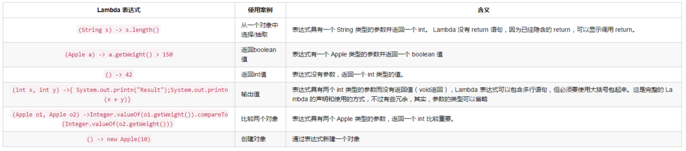

Lambda 表达式
编程中提到的 Lambda 表达式，通常是在需要一个函数，但是又不想费神去命名一个函数的场合下使用，也就是指匿名函数。
Lambda 允许我们把行为传到函数里。之前把行为传到函数里我们采用的是匿名内部类，该方法导致行为最重要的方法夹杂在中间，不够突出，详见举例中代码。
//以前点击事件，使用了匿名内部类
mButton.setOnClickListener(new View.OnClickListener() {
@Override
public void onClick(View view) {
Toast.makeText(MainActivity.this, "toast", Toast.LENGTH_LONG).show();
}
});
//新款Lambda 表达式，大家可以比较下上下的不同之处
mButton.setOnClickListener(view -> Toast.makeText(MainActivity.this, "toast", Toast.LENGTH_LONG).show());
因此Lambda 表达式可以理解为简洁地表示可传递的匿名函数的一种方式：它没有名称，但它有参数列表、函数主体、返回类型，可能还有一个可以抛出的异常列表。
代码格式
Lambda 表达式的基本格式是：() -> {}
有下面三种具体表达：
//(params) -> expression
//接收 x 和 y 这两个整形参数并返回它们的和；
(int x, int y) -> x + y
//(params) -> statement
//不接收参数，返回整数 ‘42’；
() -> 42
//(params) -> {statement}
//接收一个字符串并把它打印到控制台，不返回值。
(String s) -> { System.out.println(s); }
文字解释
Lambda 表达式的语法由参数列表、箭头符号 -> 和函数体组成。函数体既可以是一个表达式，也可以是一个语句块：
- 表达式：表达式会被执行然后返回执行结果。
- 语句块：语句块中的语句会被依次执行，就像方法中的语句一样
- return 语句会把控制权交给匿名方法的调用者
- break 和 continue 只能在循环中使用
- 如果函数体有返回值，那么函数体内部的每一条路径都必须有返回值
Lambda 表达式也会经常出现在嵌套环境中，比如说作为方法的参数。为了使 lambda 表达式在这些场景下尽可能简洁，我们去除了不必要的分隔符。不过在某些情况下我们也可以把它分为多行，然后用括号包起来，就像其它普通表达式一样。
FileFilter java = (File f) -> f.getName().endsWith("*.java");
String user = doPrivileged(() -> System.getProperty("user.name"));
new Thread(() -> {
connectToService();
sendNotification();
}).start();
具体案例

方法引用（关键字 ::）
简单来说，方法引用就是 Lambda 表达式的一种简写。当你创建一个 Lambda 表达式时，你创建了一个匿名方法并提供方法体，但你使用方法引用时，你只需要提供已经存在的方法的名字，它本身已经包含方法体。
做一个简单的解释，对集合进行排序，使用了Comparator的匿名内部类写法
public static void main(String[] args) {
List<Integer> list = new ArrayList<Integer>();
list.add(2);
list.add(1);
Collections.sort(list,new Comparator<Integer>(){
@Override
public int compare(Integer a, Integer b) {
return a - b;
}
});
}
//用Lambda 进行表示
Collections.sort(list, (a, b) -> a - b);
//使用Lamabda 的方法引用，可以让匿名内部类Comparator中方法的两个参数和Integer类中compare方法的两个参数自动对应起来，是不是简洁明了呢。
Collections.sort(list, Integer::compare);
方法引用的种类（Kinds of method references）
- 静态方法引用：ClassName::methodName
- 实例上的实例方法引用：instanceReference::methodName
- 超类上的实例方法引用：super::methodName
- 类型上的实例方法引用：ClassName::methodName
- 构造方法引用：Class::new
- 数组构造方法引用：TypeName[]::new
- 对于静态方法引用，我们需要在类名和方法名之间加入 :: 分隔符，例如 Integer::sum
使用 Lambda 的好处
- Lambda 表达式不需要每次都要被实例化，对于 Java 来说，带来巨大的好处。不像实例化匿名类，对内存的影响可以降到最小。
- Lambda 表达式不需要拷贝变量到它的运行环境中，从而 Lambda 表达式被当做是一个真正的方法来对待，而不是一个类的实例 。
- 因为是复制，变量必须声明为 final 类型，以保证在获取和使用时不会被改变。Java 使用了优雅的方式保证了变量不会被更新，所以我们不用显式地把变量加上 final 修饰。
- Lambda 表达式函数体适合小型 Lambda 表达式，它消除了 return 关键字，使得语法更加简洁。
- Lambda 表达式取代了匿名内部类，取消了模板，允许通过函数式风格编写代码，使代码的可读性更高，如果不想看不懂大佬的代码的话，赶紧学起来吧。